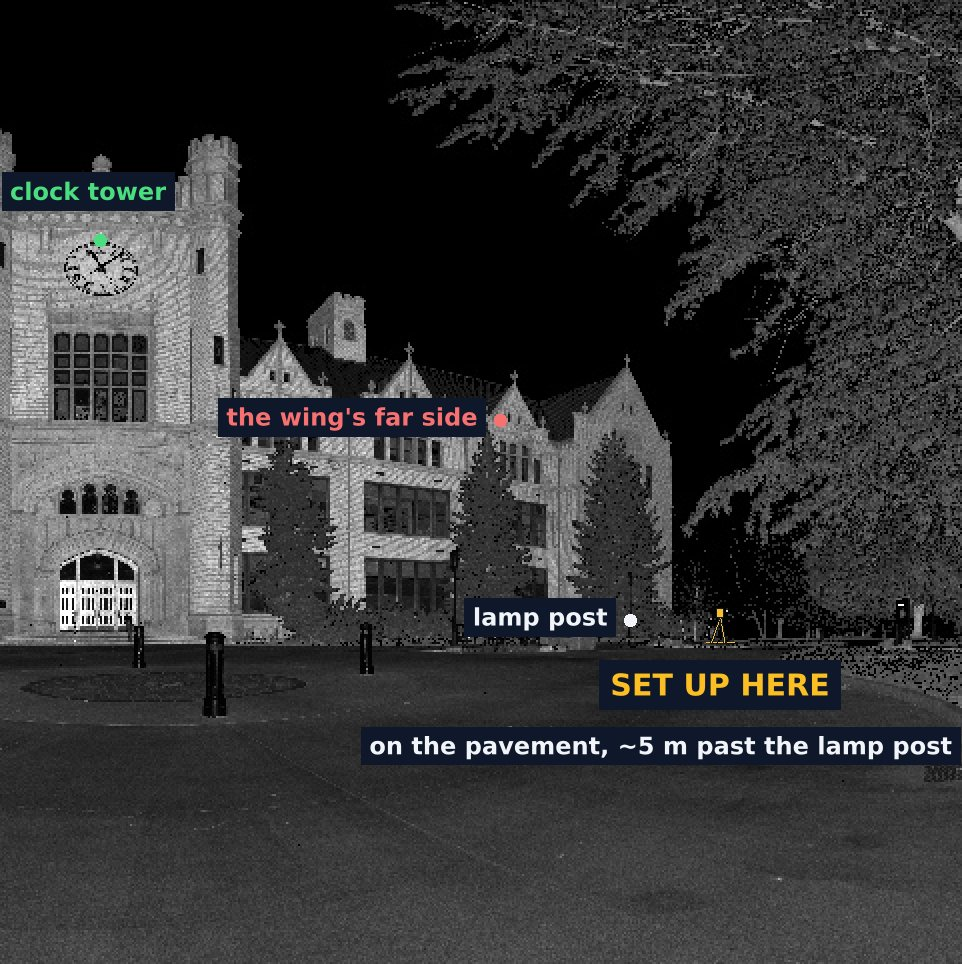

Wall plumb and flatness
Is the long facade plumb, within a quarter inch in ten feet?
7.1 mm over 13.8 m
Read the visitYou say what you need to know. These four answers are the administration building at the University of Idaho.
Is the long facade plumb, within a quarter inch in ten feet?
7.1 mm over 13.8 m
Read the visit

Where will water stand in this lot?
23 places, each at least half a square metre and 10 mm deep
Open the ground

Give me the whole site in one map.
19 stations, one map
Open the site record

How tall is the building, and how does the ground fall?
16.2 m from the ground at its foot to the top of the wall
Open the heightsWhere do I stand next?
After each station, the scan shows the next spot on the view you already have, and the tripod the size it will be there.
